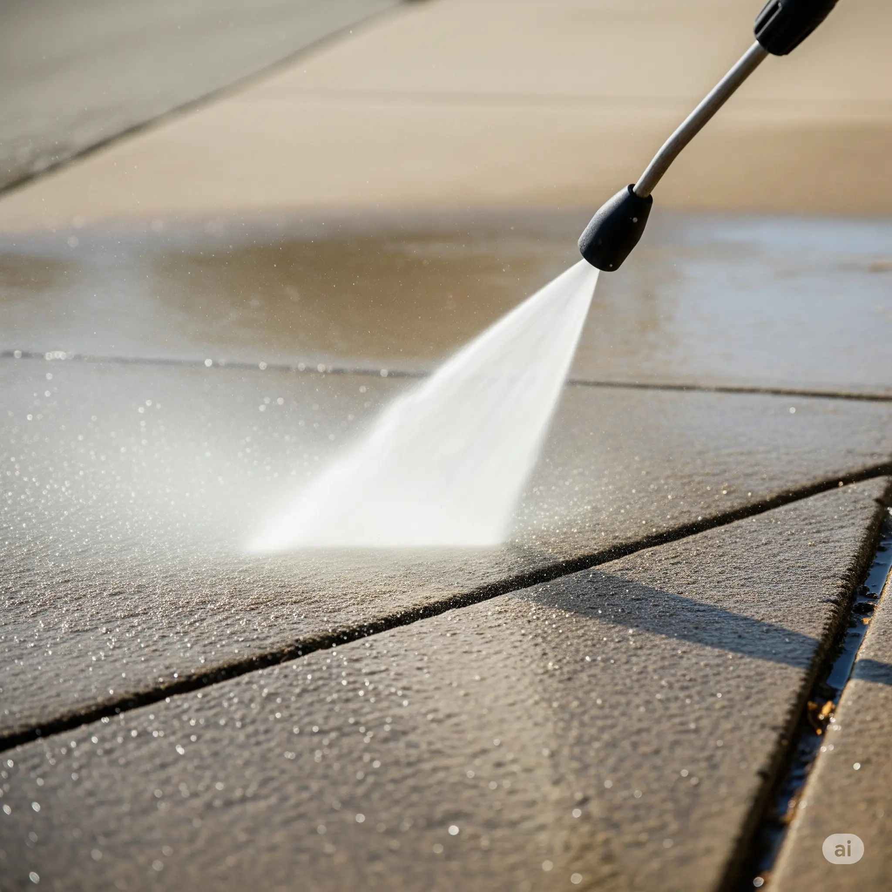
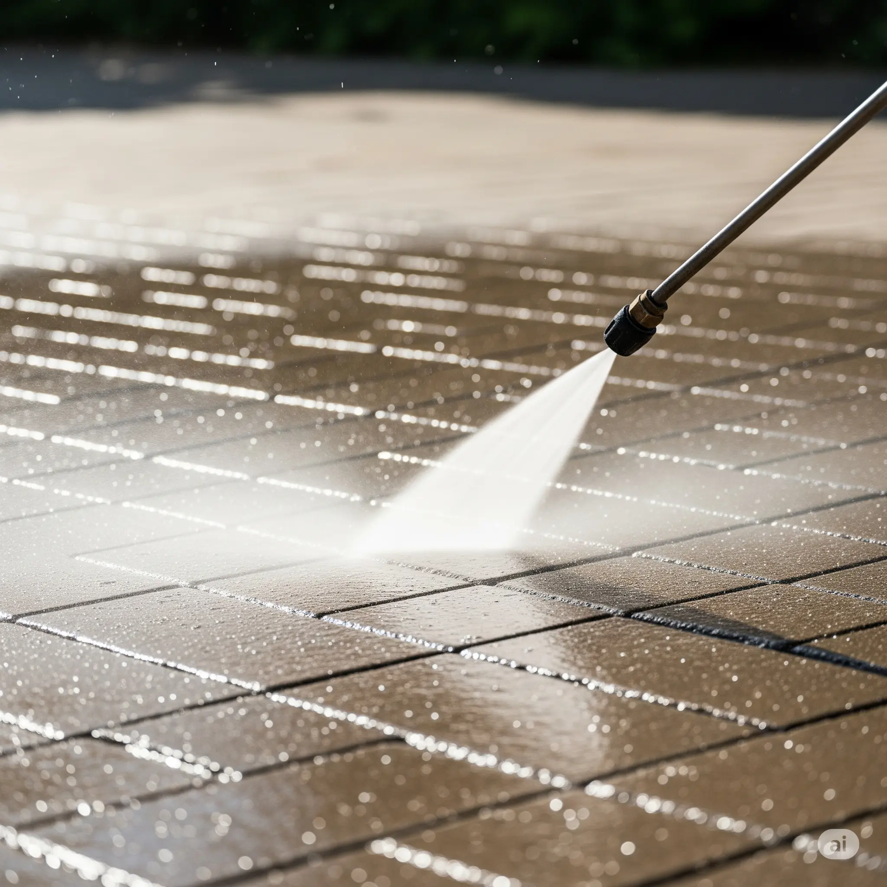
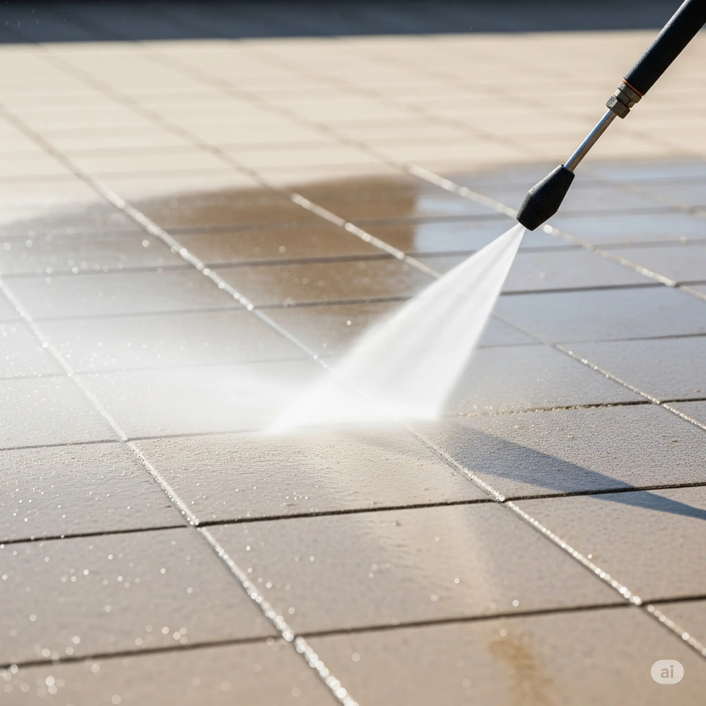
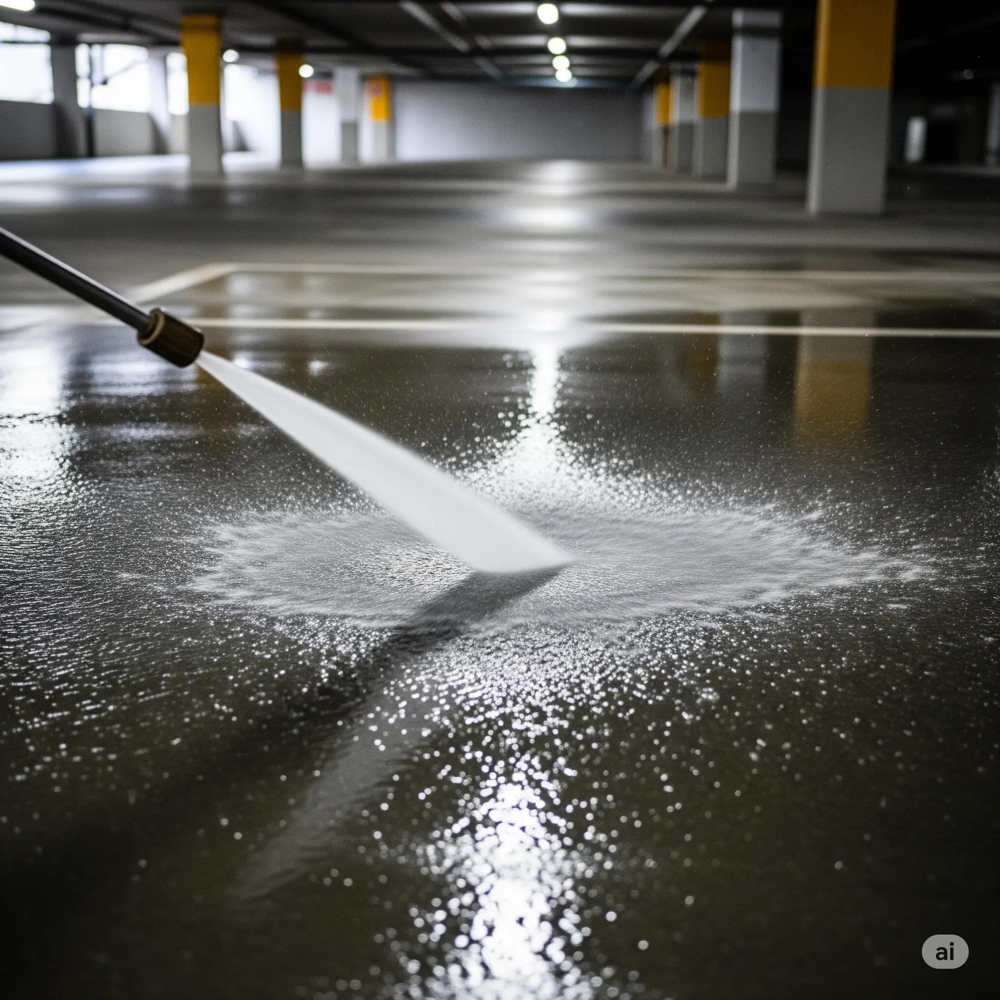

KOMPETENZ. PRÄZISION. LEIDENSCHAFT.
Wir arbeiten mit Hochdruck –
für den Wert
Ihrer Immobilie.
Ihre Immobilie verdient mehr als nur Pflege. Für Sie - im Vorderhunsrück und Großraum Koblenz.
Jetzt kontaktierenUNSERE DIENSTLEISTUNGEN.
Unsere Leistungen im Bereich
der Hochdruckreinigung

Pflastersteine & Einfahrten
Wir reinigen Ihre Einfahrt gründlich und schonend. Hartnäckiger Schmutz, Moos und Ablagerungen werden effektiv entfernt.
- Sicherer Tritt durch rutschfreie Oberflächen
- Werterhalt von Wegen und Einfahrten
- Umweltfreundliche Reinigung

Höfe & Gehwege
Ob Pflasterstein oder Betonfläche – wir reinigen Ihre Höfe und Gehwege. Dies sorgt für sicheren Tritt und eine gepflegte Optik.
- Sicherer Tritt durch rutschfreie Oberflächen
- Werterhalt von Wegen und Einfahrten
- Umweltfreundliche Reinigung

Terrassen
Ihre Terrasse wird von uns professionell gereinigt, damit Sie den Sommer wieder in vollen Zügen genießen können.
- Sicherer Tritt durch rutschfreie Oberflächen
- Werterhalt von Wegen und Einfahrten
- Umweltfreundliche Reinigung

Tiefgaragen & Stellplätze
Auch große Flächen wie Tiefgaragen und Stellplätze reinigen wir effizient und professionell von Öl, Reifenabrieb und Schmutz.
- Sicherer Tritt durch rutschfreie Oberflächen
- Werterhalt von Wegen und Einfahrten
- Umweltfreundliche Reinigung